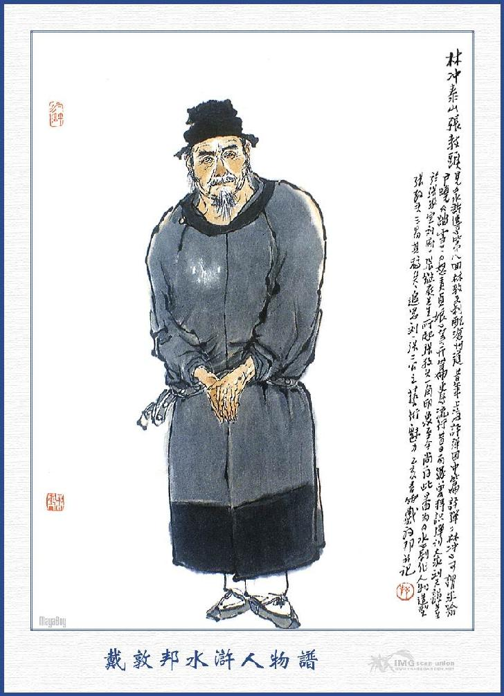
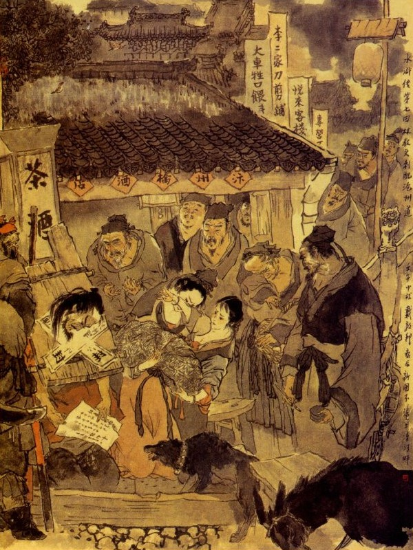
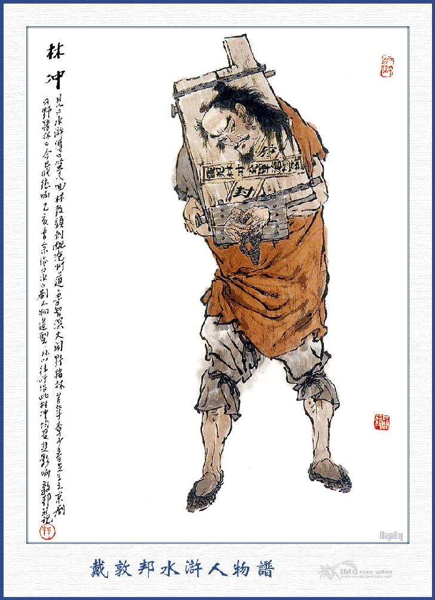

Bấy giờ lũ kia đổ xô vào trói Lâm Xung rồi Cao Thái Úy thét quân lính dàn hàng, để đem Lâm Xung ra chém. Lâm Xung kinh sợ kêu là oan uổng thì Cao Thái Úy lại quát lên rằng:
- Oan gì? Ngươi tự tiện đi vào Bạch Hổ Đường có việc chi? Bây giờ trong tay vẫn cầm đao đấy, không phải là ngươi định hại ta hay sao?
- Bẩm Thái Úy không cho đòi thì khi nào tôi dám vào? Hiện có hai tên dẫn tôi vào đây lúc nãy.
- Trong phủ ta có lính nào ta chả biết, ta sai đi hay không, ta lại không biết à? Tả hữu đâu? Hãy đem nó ra phủ Khai Phong, bảo quan Phủ tra xét việc này thế nào rồi sẽ xử quyết cho nó.
Nói xong sai một người thân mật lấy thanh đao của Lâm Xung phong vào cẩn thận rồi giải ra phủ Khai Phong. Tên người nhà giải Lâm Xung và thanh đao ra phủ Khai Phong, lại đem lời Thái Úy bẩm cho quan Phủ biết. Quan Phủ nghe nói liền hỏi Lâm Xung rằng:
- Lâm Xung làm chức Giáo Đầu, sao không biết pháp luật mà cầm đao đi vào Bạch Hổ Đường như thế? Tội có đáng chết hay không?
Lâm Xung chấp tay kêu rằng:
- Xin ân tướng xét cho, việc này thực là oan ức, chúng tôi dốt nát thô lỗ, song cũng biết đôi chút pháp luật có đâu dám thiện tiện vào Bạch Hổ Đường như thế? Việc này chẳng qua vì một lẽ riêng, chúng tôi có thể đoán ra rằng, xin ân tướng xét kỹ cho.
- Vì lẽ chi ngươi cứ nói?
Lâm Xung bèn thuật đầu đuôi từ khi Cao Nha Nội gặp vợ mình ở Nhạc Miếu, cho đến khi lập kế ở nhà Ngu Hầu, lại đến lúc mua thanh đao và hai tên lính gọi vào trong phủ Thái Úy rồi vì sao mà đến thế này, nhất nhất phải kể cho Phủ Doãn nghe.
Phủ Doãn nghe xong, nhất diện viết công văn về trình Thái Úy rồi nhất diện hãy cho gông cổ Lâm Xung mà giam vào ngục.
Vì đâu nên nỗi nước này!
Anh hùng trái vận đắng cay chăng trời?
Bên kia bố vợ Lâm Xung là Trương Giáo Đầu, biết tin con rể mắc nạn liền kiếm tiền của đến nói với người tra án, để châm chước giúp cho. Người này họ Tôn tên Định, vốn tính hiếu thiện, xưa nay hay che chở giúp đỡ cho người, nhân thế người ta thường gọi là Tôn Phật Nhi. Tôn Định biết đầu đuôi là Lâm Xung oan khuất, liền kêu với quan Phủ rằng:
- Việc này xét ra Lâm Xung thực là oan khuất, xin quan lớn che chở cho hắn thì hơn.
Quan Phủ lắc đầu mà phán rằng:
- Tội này là hắn làm ra, quan Thái Úy đã phê chấp vào tội "vô cố cầm đao tới Bạch Hổ Đường định sát hại quan trên" như thế, còn che chở sao được?
- Bẩm ngài, nếu vậy thì phủ Khai Phong đây, đã thuộc về nha tư của quan Thái Úy họ Cao, chứ không phải thuộc về triều đình nữa hay sao?
- Nói lạ!
- Xưa nay ai không biết rằng Cao Thái Úy đã ỷ quyền ỷ thế làm lắm điều xằng, thế mà phủ Khai Phong lại hùa vào làm đảng nữa, thôi thì bảo giết là giết, bảo mổ là mổ, như vậy há không phải phủ nha riêng của Thái Úy sao?
- Đành vậy, nhưng việc này biết làm thế nào cho được?
- Cứ ý chúng tôi xem ra thì Lâm Xung vô tội, nhưng chỉ có một điều là bây giờ không bắt đâu được hai tên lính dẫn hắn vào Bạch Hổ Đường thì cũng hơi khó lòng một chút, vậy chỉ nên khép tội cho hắn là cầm đao đi lầm vào Bạch Hổ Đường thì phạt 20 trượng và bắt đi xung quân ở một nơi xa, thế là đủ rồi.

TRƯƠNG GIÁO ĐẦU (CHA VỢ LÂM XUNG)
Phủ Doãn nghe nói có lẽ, liền đem việc ấy vào bẩm cho Cao Thái Úy biết. Cao Thái Úy nghe lời Tri Phủ nói cũng biết là việc mình làm xằng hụt lý và cũng hơi e lòng Tri Phủ, nên ưng lời mà phê phó ngay. Hôm đó Tri Phủ trở về Phủ, cho đòi Lâm Xung lên tháo các đồ gông ra, đánh phạt 20 trượng rồi gọi thợ thích chữ vào mặt rồi lại gông vào cẩn thận mà viết công văn trao cho hai tên công sai giải tù, sang đài ở Thương Châu. Hai tên công sai là Đổng Siêu và Tiết Bá, vâng lĩnh giấy má rồi đem Lâm Xung ra khỏi phủ Khai Phong. Bấy giờ hàng xóm láng giềng, cùng bố vợ Lâm Xung là Trương Giáo Đầu, cùng đến cửa phủ, để đón tiếp rồi đưa cả nhau vào một cái hiệu ở bên cầu để nói chuyện. Lâm Xung phàn nàn với Trương Giáo Đầu rồi lại nói rằng:
- May nhờ Tôn Phật Nhi có lòng che chở giúp đỡ, cho nên đòn cũng đỡ đau, chứ không thì có lẽ không đi được nữa.
Trương Giáo Đầu nghe nói nửa cảm nửa thương, liền gọi tửu bảo lấy rượu ra đãi hai người giải tù cùng uống cho vui. Rượu được vài tuần thì Trương Giáo đầu lấy ra mấy lạng bạc đưa cho tên công sai rồi dặn dò để trông nom giúp đỡ.
Bấy giờ Lâm Xung đứng dậy chấp tay nói với trượng nhân rằng:
- Con chẳng may gặp ngày xung tháng hạn, bỗng dưng nên nổi nước này, vậy con có mấy lời tâm sự xin trượng nhân thương đến, từ khi vợ chồng con sum họp với nhau, đến nay đã được ba năm, tuy rằng trời chưa cho con một chút con nào, song sự ăn ở với nhau, thực chưa hề có điều gì là trái ý, tới nay con phải đi đày ải xa khơi, sau này mất còn chả biết, nếu mà để vợ con ở góa một mình thì thực trong lòng không ổn! Vả chăng vợ chồng con cũng còn đương trạc thanh xuân, e khi ở lại trong nhà, lỡ bị Cao Nha Nội lại đem lòng ức hiếp thì bấy giờ sẽ xử ra sao? Việc ấy quyết nhiên không nên vì con mà để mất con đường thân thế, vậy tiện đây đông đủ xóm giềng, con xin viết tờ giấy hưu thư, để cho vợ con tùy tiện lấy chồng, như thế thì con mới yên lòng đi được.
Trương Giáo Đầu gạt đi rằng:
- Chết nỗi! Sao hiền tế lại nói như vậy. Bây giờ chẳng may gặp phải cơn đang vận túng, đành hãy đến Thương Châu mà lánh nạn ít lâu rồi sau này tất nhiên trời kia thương lại cũng còn vợ chồng sum họp với nhau, chứ có điều chi mà ngại! Nhà lão đây nghèo cũng còn kiếm được để nuôi hai thầy trò nó, trong năm ba năm mà đợi khi sắc cầm tái hợp về sau. Còn như Cao Nha Nội có ý lôi thôi thì ta sẽ cấm con gái ta ở nhà, còn gặp ở đâu mà sinh sự được nữa. Việc ấy hiền tế cứ an tâm, đi sang Thương Châu ở đó rồi thỉnh thoảng viết giấy về cho ta, quần áo ta đây sẽ chu cấp gửi sang, chớ nghĩ quanh quẩn làm cho thêm khổ?
- Đành vậy, con xin cảm tạ trượng nhân song không thể nào yên tâm để cho vợ con lỡ làng như thế được! Nếu trượng nhân có lòng thương tôi mà nhận lấy lời cho thì tôi chết đi mới được yên hồn nơi chín suối, xin với trựơng nhân biết cho.
Trương Giáo Đầu nghe vậy lại càng cảm động, nhất định không ưng lời, đoạn rồi xóm làng túm vào mà khuyên can, không nên như thế.
Lâm Xung quả quyết đáp rằng:
- Nếu trượng nhân không nghe lời tôi thì sau này có được về đây, tôi quyết không đoàn tụ với nhau được nữa!
Trương Giáo Đầu nghe nói, không biết trả lời ra sao, liền bảo Lâm Xung rằng:
- Nếu vậy tùy ý hiền tế, muốn viết sao cứ viết, nhưng tôi đây không gả chồng cho con gái tôi thì thôi.
Nói đoạn sai tửu bảo lấy bút và mượn người đến viết hộ. Trong thư viết như sau:
- Tôi là Lâm Xung làm chức Giáo Đầu ở Đông Kinh, nhưng vì mắc tội phải đi đày ở Thương Châu, sau này sống chết thế nào chưa biết! Vậy nhân lập hưu thư tình nguyện cho vợ là Trương Thị trở về xuất giá, từ nay không can thiệp điều chi? Việc này tự ý định làm, không ai bức bách, sợ sau không tiện, nên viết để làm tin.
Ngày, tháng, năm. Lâm Xung ký tên và in tay ở dưới.

Vừa khi Lâm Xung ký xong, toan đưa cho Trương Giáo Đầu thì thấy người vợ vừa gào vừa khóc, ở đâu đi đến lại có cả con trẻ cắp gói quần áo đi theo sau nữa. Lâm Xung trông thấy, liền quay ra bảo vợ rằng:
- Nàng ơi! Tôi có một câu chuyện, đã thưa với trượng nhân rồi, hiện nay tôi bị vận nạn thế này, chưa biết về sau còn sống chết hay không, vậy nàng còn đương xuân xanh tuổi trẻ, phải nên sớm liệu mà kiếm chỗ để nương thân, tôi đã viết bức hưu thư ở đây, nàng giữ lấy làm tin, không nên vì tôi để lỡ độ xuân xanh mới được.
Trương Thị nghe nói lại khóc nức nở mà rằng:
- Trời ơi! Tôi có điều chi thậm tệ mà phu quân nỡ bỏ tôi như thế?
Lâm Xung an ủi rằng:
- Đó là lòng tốt của tôi, không muốn để cho bó buộc làm lỡ cả nhau, chuyện nên mới viết bức thư này, xin nàng cứ an tâm, đừng nghĩ nữa thêm phiền.
Trương Giáo Đầu quay lại bảo với con gái rằng:
- Thôi, con cứ lặng yên, để cho chồng con viết, sau đây ta không gả chồng cho con nữa thì thôi mà vạn nhất chồng con nó không về đây nữa thì sau này ta sẽ kiếm kế sinh nhai, cho con yên ấm một đời mà yên lòng thủ tiết, thế là cũng được chứ sao?
Trương Thị nghe nói đã cay đắng trong lòng, lại trông thấy phong thư ở đó thì khóc lên một tiếng mà ngã ngất ra đây. Than ơi!
Vì đâu mưa gió bất bình
Để ai chia rẽ gánh tình vì ai?
Ngán thay là kiếp ở đời,
Anh hùng khi cũng thua trời mới căm!
Trương Giáo Đầu cùng Lâm Xung thấy vậy thì đổ xô vào kêu gọi, hồi lâu mới tỉnh, đoạn rồi những đàn bà hàng xóm, cùng túm vào khuyên giải mà dìu dắt Trương Thị ra về.
Bấy giờ Trương Giáo Đầu lại bảo Lâm Xung rằng:
- Hiền tế đi chuyến này, phải bảo trọng lấy thân, nếu có cơ hội gì thì phải về đây mới được, còn vợ con ở nhà thì tôi sẽ đem về cùng ở với tôi, để chớ khi tái hợp, hiền tế chớ nên phiền nghĩ làm chi. Nếu có ai đi về thì hiền tế năng gửi thư luôn cho tôi được biết.
Nói đoạn thì Lâm Xung lạy từ nhạc phụ Trương Giáo Đầu cùng lân bang rồi khoác khăn gói, theo hai tên công sai ra đi. Hai tên công sai dẫn Lâm Xung về tới phòng Sứ Thần ký giam ở đó rồi cùng nhau về nhà để sửa soạn hành lý. Khi đó hai tên công sai là Đổng Siêu và Tiết Bá đều người nào trở về nhà ấy, để sắp sửa đồ hành trang, có một tên tửu bảo ở tửu điếm gần đó, chạy đến nhà Đổng Siêu mà nói rằng:
- Có một vị quan nhân người ở hàng tôi, bảo mời ông đến chơi nói chuyện.
Đổng Siêu hỏi:
- Ai thế?
- Bẩm không biết là ai, ông ấy bảo cứ mời ông đến chơi thì biết.
Đổng Siêu nghe nói, liền theo tên tửu bảo, đi đến tửu điếm xem ai. Khi tớimột gian gác ở tửu điếm ấy thì thấy người kia ra vái chào Đổng Siêu mà nói rằng:
- Xin mời ông vào ngồi chơi.
Đổng Siêu thấy lạ mặt liền hỏi:
- Tôi trông ngài hình như chưa được quen biết bao giờ? Chẳng hay ngài có việc chi mà cho gọi đến đây?
Người kia cười mà đáp rằng:
- Xin ông cứ ngồi chơi rồi một lát sẽ biết.
Nói xong kéo Đổng Siêu ngồi xuống một bên, sai tửu bảo gọi rượu và thức nhắm lên rồi lại nói luôn rằng:
- Không biết rằng nhà ông Tiết Bá ở đâu?
Đổng Siêu đáp:
- Ở ngay ngõ trước kia.
Người kia nghe nói, liền sai tửu bảo chạy ba chân bốn cẳng đi mời Tiết Bá đến. Khi Tiết Bá đến nơi, Đổng Siêu liền quay ra bảo rằng:
- Vị quan nhân này mời chúng ta đến đây, không biết rằng nói chuyện gì?
Người kia nghe nói biết ngay rằng Tiết Bá, liền đứng lên mời ngồi. Tiết Bá hỏi:
- Chúng tôi xin hỏi khí không phải, quý hiệu ngài là chi xin cho biết.
- Xin ông hãy ngồi xơi rượu với tôi rồi sẽ biết.
Nói đoạn sai tửu bảo rót rượu ba người cùng uống. Một lát người ấy móc túi ra lấy 10 lạng bạc, để ra bàn mà nói rằng:
- Món tiền này xin hai bác nhận cho, tôi có câu chuyện muốn phiền hai ông đây.
Đổng Siêu, Tiết Bá thấy vậy đều ngạc nhiên, không hiểu mà nói rằng:
- Chúng tôi không có được biết ngài, đau mà dám nhận tiền của ngài?
- Có phải hai ông sắp đi Thương Châu nay mai đó không?
- Vâng, chúng tôi vâng lời quan sắp giải Lâm Xung đến đấy.
- Bởi vậy tôi muốn phiền hai ông một chút, tôi là Lục Ngu Hầu người nhà quan Cao Thái Úy đây.
- Chết nỗi! Nếu vậy sao chúng tôi dám ngồi uống rượu với ngài?
- Không hề chi, các ông có hiểu việc Lâm Xung đối với quan Thái Úy thế nào không? Bây giờ ngài sai tôi đưa món tiền này để biếu các ông, các ông cứ nhận mà hết sức giúp cho. Cứ đến chỗ nào vắng vẻ thì các ông giết phăng tên Lâm Xung ấy đi rồi sau đi phủ Khai Phong, nếu có việc gì thì quan Thái Úy sẽ đảm nhận cho, không ngại chi cả. Đổng Siêu nghe nói liền đáp rằng:
- Việc ấy chỉ sợ không làm được! Vì trong công văn của phủ, chỉ nói là giải sang Thương Châu, chứ không nói gì đến sự giết hắn cả. Vả chăng ông ta còn đương khỏe mạnh, có thể nào hạ thủ ngay được, ngộ vạn nhất có xảy ra thế nào thì không tiện lắm.
Tiết Bá nói:
- Lão Đổng ơi! Lão vớ vẩn quá! Quan Thái Úy bảo thế nào mà ta không phải theo? Huống chi ngài đã ủy Ngu Hầu ra bảo mình và lại cho tiền ở đây thì anh còn từ nan thế nào được. Thôi anh em ta cứ chia lấy mà nhận lời thì hơn.
Nói đoạn hai người chia nhau lấy mười lạng bạc rồi bảo Lục Khiêm rằng:
- Được, xin ngài cứ an tâm, chỉ trong mấy độ đường là chúng tôi liệu ngay thôi.
Lục Khiêm cả mừng nói rằng:
- Hễ khi các ông làm xong thì mang cái kim ấn ở mặt Lâm Xung về đây, để cho tôi biết làm tin. Gọi là có mấy lạng bạc đấy, các ông đừng chê ít mà cố sức cho, tôi xin đợi ở nhà đó.
Đoạn ba người lại uống một lúc nữa, bấy giờ Lục Khiêm mới trả tiền hàng mà cùng nhau từ giả chia đường. Khi đó Đổng Siêu, Tiết Bá đem tiền về giao để ở nhà rồi khoác khăn gói hành lý, mỗi người vác một thanh gậy đến phòng Sứ Thần đem Lâm Xung giải đi. Đời nhà Tống có lệ, phàm những quân lính giải tù, đi đến đâu ngủ trọ đều không phải trả tiền. Hôm ấy hai người đi hơn 30 dặm đường thì trời sắp tối, liền tìm vào một hàng cơm để trọ rồi sáng hôm sau lại ăn uống mà đi thực sớm.
Bấy giờ đương độ tháng 6, tiết trời nóng bức lạ thường, mấy hôm trước Lâm Xung mới bị đòn, còn chưa việc gì, tới nay mới được vài hôm, bị khí trời nung nóng làm cho các chỗ bị đánh đều sưng tất cả lên, đau đớn quá đỗi không làm soa đi được. Tiết Bá thấy Lâm Xung đi chậm thì mắng rằng:
- Từ đây tới Thương Châu những 2000 dặm đường mà đi như thế thì bao giờ cho tới nơi được!
Lâm Xung phàn nàn rằng:
- Tôi chỉ vì bị mấy chục trượng, bây giờ trời nóng phát lên, cho nên không thể nào mà đi nhanh được, xin các ông thứ cho.
Đổng Siêu thấy vậy thì bảo rằng:
- Thôi thong thả vậy, không nói làm gì nữa.
Tiết Bá thì vừa đi vừa chưởi rủa, lảm nhảm suốt cả ngày không thôi, khi trời đã sắp tối vào một cái hàng kia, Lâm Xung biết thân phải giở khăn gói lấy ra ít tiền, bảo nhà hàng dọn rượu, để mời hai anh kia cùng uống. Bấy giờ hai anh đổ rượu cho Lâm Xung uống thật say, nằm vật xuống một xó rồi Tiết Bá đi đun một nồi nước sôi, đổ ra cái chậu rửa chân, đem đến gọi Lâm Xung dậy mà bảo rằng:
- Giáo Đầu hãy dậy rửa chân đã rồi hãy ngủ.
Lâm Xung nghe nói toan dậy, song bị cai gông làm vướng không sao mà co mình dậy được, Tiết Bá liền bảo rằng:
- Để tôi rửa chân hộ cho vậy.
Lâm Xung vội gạt mà rằng:
- Có đâu dám thế!
Tiết Bá nói:
- Chỗ lữ thứ này cần gì, để tôi rửa đỡ cho.
Lâm Xung tin thực, thò chân cho Tiết Bá rửa hộ, Tiết Bá cầm chân Lâm Xung dúng vào một cái trong chậu nước sôi. Lâm Xung giật mình kéo cẳng lên thì đã bỏng hai bàn chân, liền rên rỉ mà kêu rằng:
- Như thế thì sống sao được?
Tiết Bá làm bộ nói rằng:
- Xưa nay người có tội phải hầu công sai chứ, công sai phải hầu người có tội bao giờ? Bây giờ người ta đã có lòng tốt rửa chân cho tử tế, lại còn ỏe họe nước nóng nước lạnh, thực là làm phúc phải tội là thế.
Nói đoạn lại lẩm nhẩm mắng nhiếc suốt đêm, Lâm Xung không dám mở miệng nói câu gì cả. Sáng hôm sau Tiết Bá dậy sớm giục nhà hàng làm cơm ăn, Lâm Xung thì đau đớn nằm vật ra đấy mà không ăn được, khi hai người ăn cơm xong, thấy Lâm Xung không đi được thì Đổng Siêu đưa cho một đôi giầy đay để đi, Lâm Xung bất đắc dĩ phải xỏ chân vào giầy rồi tính tiền trả tiền hàng mà theo hai người lên đường.
Bấy giờ vào khoảng trống canh năm, Lâm Xung mới đi được chừng vài ba dặm đường thì hai bên chân đi đôi giầy mới sát vào toạc hẳn cả ra rồi máu chảy đầm đìa, đành chỉ kêu gọi ầm ĩ mà không sao đi được nữa.
Tiết Bá quay lại mắng rằng:
- Có đi thì đi mau mà không thì gậy đánh vào đít bây giờ đấy.
Lâm Xung kêu vang rằng:
- Khốn nạn! Tôi dám lười đâu! Vì hai chân đau quá, không sao đi được nữa, xin các ông xét cho.
Đổng Siêu nói:
- Nếu vậy để tôi dắt cho mà đi.
Nói xong đến dắt Lâm Xung đi, khi đi được độ 4, 5 dặm đường thì xem chừng Lâm Xung lại mỏi mệt quá, không sao mà bước đi được nữa. Bấy giờ trông đằng trước đằng sau đã có mấy khu rừng lớn cây cối um tùm, khói mây mờ mịt, tục gọi tên là Dã Trư Lâm là một nơi rất hiểm ác quạnh hiu, xưa nay những kẻ vô lương, thường đút tiền cho đám khâm sai để kết liễu tính mệnh biết bao tay hảo hán ở đó. Khi ấy hai tên công sai cố dìu dắt cho Lâm Xung đi đến khu rừng ấy rồi Đổng Siêu thở dài mà nói rằng:
- Đi suốt cả ngày không được mươi dặm đường thì bao giờ cho đến Thương Châu?
Tiết Bá nói:
- Tôi cũng mệt lắm không sao đi được nữa, hãy ngồi đây nghỉ một lát vậy.

LÂM XUNG
Nói đoạn ba người cùng vất khăn gói hành lý xuống gốc cây rồi mằm vật xuống để nghỉ. Vừa đi nằm chợp được một tí thì bỗng thấy hai tên công sai kêu to lên một tiếng mà nhảy choàng dậy, Lâm Xung thấy vậy thì hỏi:
- Các ông làm sao thế?
Tiết Bá, Đổng Siêu bảo Lâm Xung rằng:
- Chúng tôi đương chợp mắt toan nghỉ một tí, nhưng lại sợ không có khóa xích gì, lỡ bác trốn mất thì sao?
- Tôi là thằng hảo hán ở đời, đã bị thế này thì chịu vậy chứ có khi nào thèm chạy trốn mà chi!
Tiết Bá nói:
- Đành vậy, nhưng chúng tôi không yên tâm, muốn rằng trói bác vào đây thì mới tiện.
- Tùy ý các ông, muốn trói thì trói, chứ tôi có nói gì đâu?
Tiết Bá liền lấy thừng trói Lâm Xung vào gốc cây cẩn thận rồi cùng với Đổng Siêu vớ lấy gậy, cầm ở tay giơ thẳng cánh lên nhắm ở giữa ót Lâm Xung để đánh.
Hỡi ơi!
Hóa nhi thực có nỡ lòng,
Đang tay vùi dập anh hùng mà chơi!
Lấy ai xoay đất chuyển trời,
Trăm năm càng thấy chuyện đời càng đau!
Cây xanh lá biếc một màu,
Hỏi hồn nghĩa hiệp về đâu bây giờ?
Lời bàn của Thánh Thán
Hồi này gồm hai đoạn văn tự, tả Lâm giáo sư với sự hưu thư và tả Dã Trư Lâm với sự roi vọt, một đoạn thấy rõ nhi nữ tình thâm và một đoạn thấy rõ anh hùng khí đoản, hãy xem tác giả tả văn, những chỗ khác nhau.